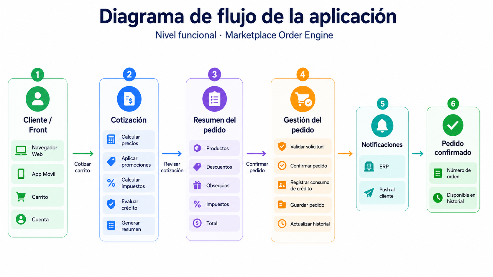
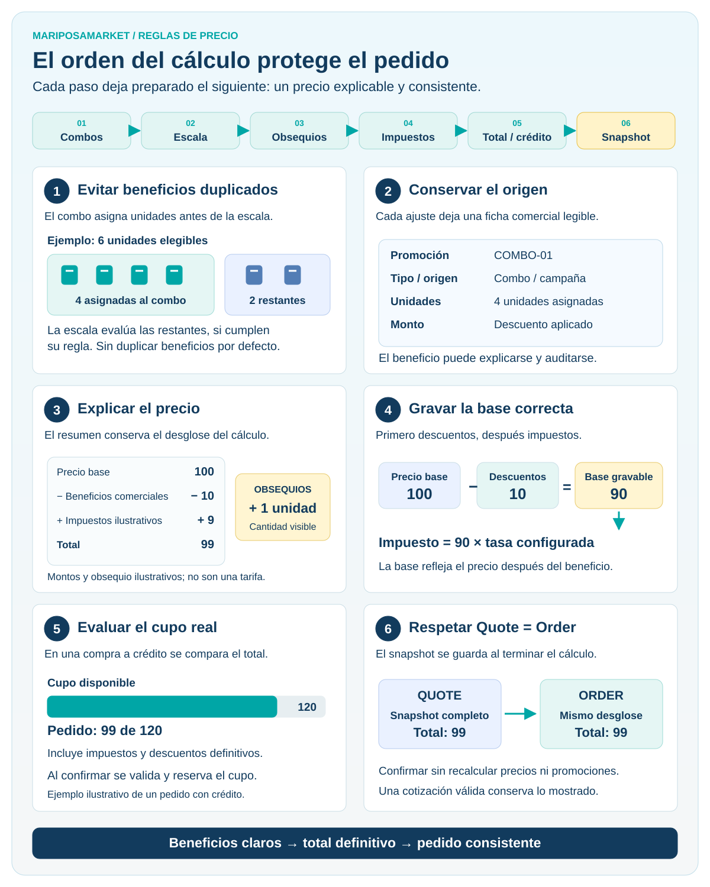
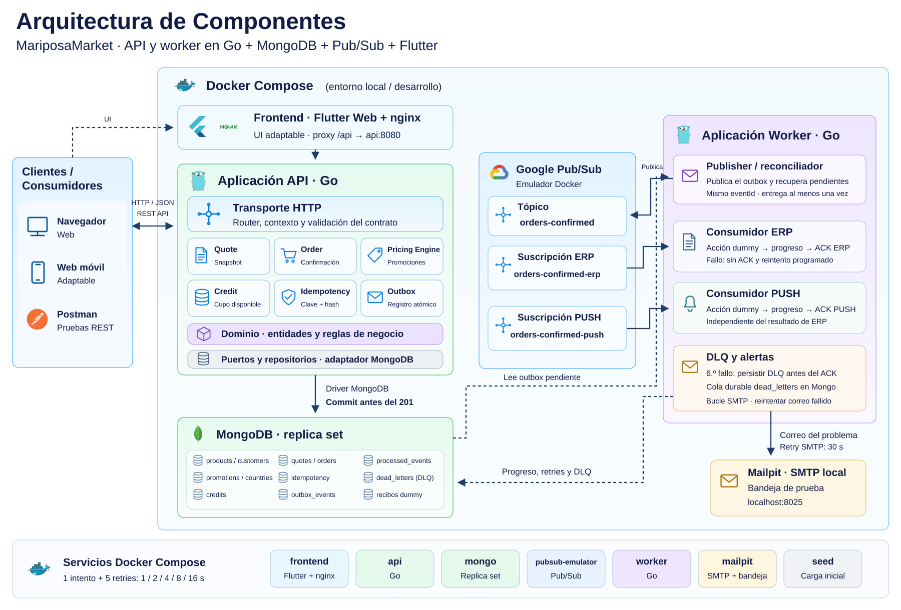
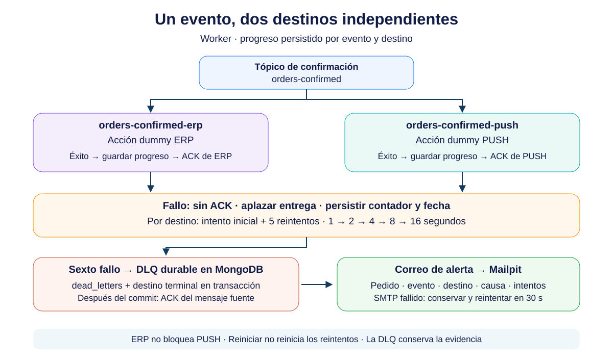

Go
API REST, motor de precios y worker.
Objetivo del documento
Consolidar el Discovery funcional y técnico de la solución propuesta para la prueba técnica: problema, flujo funcional, journey del cliente, dominio y reglas de negocio, casos de uso, estrategia de pruebas, casos golden, orden de aplicación de palancas comerciales y stack tecnológico.
La plataforma corresponde a un marketplace B2B multi-tenant donde tenderos compran productos a distribuidores de bebidas.
El journey principal de compra es:
Catálogo → Carrito → Checkout / Cotización → Confirmación → Historial
Sobre un mismo pedido pueden coexistir distintas palancas comerciales:
La solución debe resolver dos problemas principales:
Dado un carrito y un conjunto de reglas comerciales vigentes, el sistema debe calcular:
El resultado debe ser explicable, es decir, no basta con entregar un total: el cliente debe poder entender cómo se obtuvo.
La confirmación debe garantizar que:
201 Created, la orden ya exista y pueda consultarse.I1. Quote.total == Order.total
I2. HTTP 201 => Order existe y es consultable
I3. Misma Idempotency-Key + mismo request => misma Order
I4. Una intención lógica de compra => un único consumo de crédito
I5. El dinero nunca usa aritmética floating point
I6. Cada descuento o beneficio debe ser trazable a su regla de origen
I7. País, moneda, escala decimal e impuestos no deben estar hardcodeados
I8. Pedido confirmado => evento de pedido confirmado publicable hacia Pub/Sub


| Momento | Expectativa del cliente | Riesgo | Respuesta de diseño |
|---|---|---|---|
| Cotización | Entender cuánto pagará | Total opaco | Breakdown completo |
| Promociones | Entender el beneficio recibido | Descuento inexplicable | Origen de cada ajuste |
| Confirmación | Pagar exactamente lo cotizado | Precio diferente al confirmar | Quote Snapshot |
| Reintento | No duplicar la compra | Doble tap / mala red | Idempotency-Key |
| Crédito | Saber si puede comprar | Sobreconsumo concurrente | Validación y consumo atómico |
| Confirmación | Tener certeza de compra | 201 sin orden persistida |
Responder después de persistir |
| Historial | Encontrar su pedido | Pedido “desaparece” | Orden consultable inmediatamente |
El orden propuesto es:
1. Resolver contexto Tenant / País
↓
2. Resolver precios base
↓
3. Detectar y asignar Combos
↓
4. Aplicar descuentos por Escala
sobre unidades elegibles restantes
↓
5. Determinar Obsequios
↓
6. Calcular Base Gravable
↓
7. Calcular Impuestos
↓
8. Calcular Totales
↓
9. Evaluar Cupo de Crédito
↓
10. Generar Quote Snapshot
La decisión se basa en las perspectivas levantadas durante el Discovery con dos perfiles de negocio.
La mirada de Marketing prioriza:
Esto implica que el motor debe mantener trazabilidad de:
Qué regla se aplicó
Sobre qué unidades
Qué beneficio produjo
Qué reglas quedaron excluidas
Combo antes que descuento por escala.
Un combo consume un conjunto concreto de productos y cantidades. Si primero se aplica un descuento individual y luego se arma un combo con las mismas unidades, el cliente podría recibir un beneficio duplicado no intencional y el breakdown sería difícil de explicar.
Por eso:
Combo
→ reserva/asigna unidades
→ Scale Discount solo sobre unidades restantes elegibles
La mirada de Producto prioriza:
Impuestos después de descuentos porque la base gravable debe reflejar el precio comercial resultante.
Crédito después del total porque solo puede evaluarse cuando ya se conoce el valor definitivo del pedido.
Quote Snapshot al final porque debe persistir exactamente el resultado completo que el cliente visualizó.

Los montos y las unidades de la infografía son ilustrativos. Los impuestos usan la tasa configurada; el cupo se evalúa en compras a crédito.
Unidades usadas por combo
≠
unidades disponibles automáticamente para otro beneficio
Cada ajuste conoce:
El cliente puede recorrer:
Precio base
→ beneficio comercial
→ obsequios
→ impuestos
→ total
La base gravable se determina después de los descuentos comerciales.
No se consulta crédito contra subtotal bruto, sino contra el valor final que efectivamente se intentará confirmar.
El snapshot se crea únicamente una vez que el cálculo terminó.
Pricing completo
→ Quote Snapshot
→ Confirm Order sin recalcular
Monolito modular con puertos y adaptadores. El dominio se mantiene independiente de HTTP, MongoDB y mensajería.
API REST, motor de precios y worker.

Persistencia, transacciones, snapshots y outbox.

Emulador local para eventos OrderConfirmed.

Servicios y pruebas reproducibles.

Frontend adaptable y golden tests visuales.

Lenguaje del frontend Flutter.

Servidor web y proxy hacia la API.

Tests, sintaxis, complejidad, seguridad y Pages.

Recorridos de compra en Chrome.

Colección para probar la API.
Go utiliza testing para pruebas unitarias, golden de negocio, integración y concurrencia. Flutter usa su analizador y pruebas de widgets; Playwright verifica el frontend contra la API real. El worker es una aplicación independiente en backend/worker; ejecuta publisher, dos consumidores independientes y alertas DLQ como goroutines y respeta cancelación, reintentos e idempotencia por destino.
Vista resumida de las carpetas existentes; los tests unitarios Go viven junto al código.
marketplace-multitenant-b2b-challenge/
├── .github/workflows/ # CI y publicación de documentación
├── backend/
│ ├── api/ # HTTP API
│ ├── worker/ # Outbox, Pub/Sub, ERP y PUSH
│ ├── cmd/seed/ # Datos de demostración
│ ├── internal/
│ │ ├── application/ # Cotización y confirmación
│ │ ├── config/ # Configuración de ejecución
│ │ ├── domain/ # Entidades, Money y errores
│ │ ├── http/ # Router y validación del contrato
│ │ ├── integration/ # Adaptadores ERP y PUSH
│ │ ├── messaging/ # Outbox y consumidor Pub/Sub
│ │ ├── ports/ # Interfaces
│ │ ├── pricing/ # Motor de reglas y pruebas
│ │ ├── repository/mongo/
│ │ ├── testkit/ # Dobles para pruebas
│ ├── contracts/ # OpenAPI, eventos y Postman
│ ├── testdata/ # Seed y fixtures
│ ├── tests/integration/
├── frontend/
│ ├── lib/ # UI, modelos, API y componentes
│ ├── test/goldens/ # Referencias visuales
│ ├── e2e/ # Playwright
│ ├── tool/ # Herramientas de documentación
├── Documentation/ # Sitio, ADR e imágenes
├── ci/ # Herramientas y reglas de calidad
├── docker-compose.yml

La solución se considera satisfactoria si demuestra:
✓ Pricing correcto y explicable
✓ Golden Tests ejecutables
✓ Quote.total == Order.total
✓ Idempotencia
✓ Crédito consistente
✓ Sin floating point para Money
✓ Multi-país configurable
✓ 201 solo después de persistir
✓ OrderConfirmed publicado solo luego de confirmar
✓ Worker desacoplado para ERP y Push
✓ Código ejecutable con un comando simple
✓ README y ADR claros
Para mantener foco en el problema de negocio: